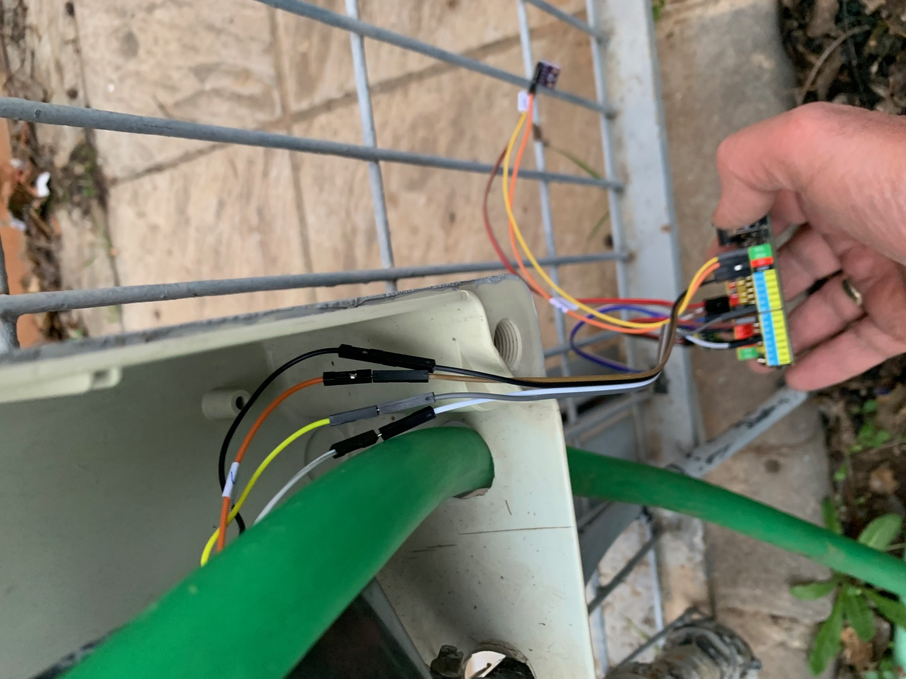
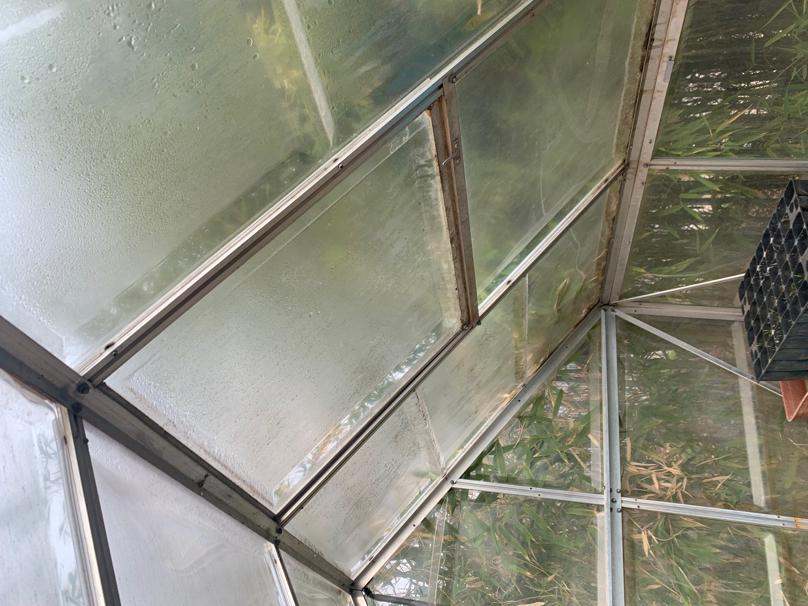

Los sensores implicados directamente en el proyecto son los que se presentan en la siguiente tabla.
| Cámara ESP32-CAM con luz Flash incorporada controlada por una ESP32 dedicada. La luz de flash se controla independientemente. | Sensor Analógico de Temperatura para medida exterior. No conectado. | Sensor DHT11 para medida de temperatura y humedad en el interior del invernadero conectado en A2 (Analógíco 2), pues todos los puertos digitales están ocupados. |
|
Sensor DHT22 para medida de humedad y temperatura exterior. No Conectado. |
Sensor BMP280 para la medida de la presión barométrica y la temperatura en el exterior. Conexion I2C |
Electroválvula, apertura y cierre con un final de carrera controlado por la ESP32. Asimismo, Relé interno que controla la puesta en marcha y paro del motor de control. Dispositivo reutilizado de una automatismo averiado. Motor controlado por relé en 17-D4 y final de carrera en 12-D8 |

Además el control de la ventana de techo del invernadero se realiza con un motor paso a paso conectado a los pines 18-D13, 19-D12, 23-D11 y 5-D10.
Estos son los sensores que directamente se controlan desde la ESP32 SteaMakers y cuyo control y programación se ha llevado a cabo mediante arduinoBlocks. Asimismo, con este programa se ha desarrollado el control de la tarjeta a través de comando enviados desde telegram. Y además se usará la ESP32-CAM para control de la cámara de fotos/video y la luz. Los comandos de control desde Telegram son:
/humedad
/temperatura
/presion
/ventana on|off
/riego on|off
/luz **
/foto **
/video on|off **
Estos comandos son los que gestionan los actuadores, sensores y captadores propios. ** Se controlan desde un bot específico para la ESP32-CAM
Se muestran algunos detalles de los mecanismos y sensores instalados en el invernadero:
|
Antes |
Después |
 Riego automático instalado. Control de Relé para motor y final de carrera. |
|
 Antes |
Mecanismo de apertura instalado. Piñón cremallera controlado motor paso a paso |
Piñón-cremallera diseñado e impreso en 3D. Controlado por motor paso a paso |